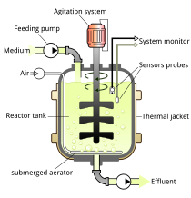

Genetic algorithem

Bioreactors are becoming a main part of our medical industry in manifacturing medicines from micro organisms.
Genetically engineerd organisms are grown in a container called bioreactor providing all the enviornmental conditions required for the growth.
And the bioreactors dependent variables like PH, RMP,Medium concentratin , Nitrogen etc should be caliberated for achiving maximum growth.
Here we use genetic algorithem to provide solutions for that problem
Genetic Algorithm is an evolutionary algorithm which can be
used to problems which does not have a proper method of solving.
Here i have used genetic algorithm to optimise input variables for a
Bioreactor for achieving maximum growth rate. The generated values
from genetic algorithm is used to train the Artificial neural network
for faster execution